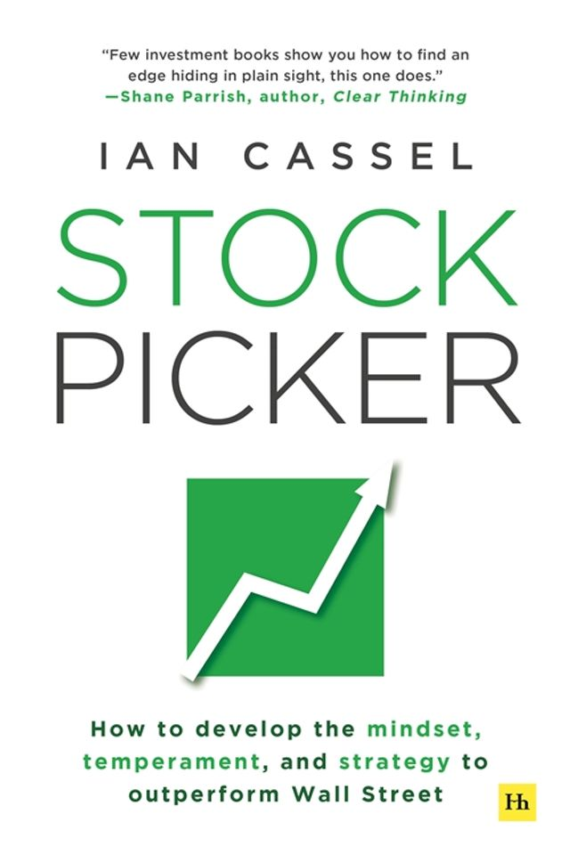

伊恩·卡塞尔（Ian Cassel）是美国微市值股票（Microcap）投资领域最具影响力的实践者与传播者之一。他从青年时期便开始学习投资，二十八岁时成为全职私人投资者，此后多年完全依靠自有资本维持生计，积累了大量真实的胜负经验。2011年，他创办了MicroCapClub——一个面向全球有经验的微市值股票投资者的在线社区，至今已聚集数千名来自不同国家的职业投资者与高净值个人。2018年，他进一步成立了Intelligent Fanatics Capital Management，专注于为高净值家庭提供微市值领域的投资管理服务。《选股者》（Stock Picker）由哈里曼出版社出版，是卡塞尔将其二十余年选股实战经历系统化整理的著作，副标题揭示了全书的三个核心维度：金钱、纪律与优势。
全书从卡塞尔的个人成长轨迹出发，逐步展开一套专门针对微市值股票的投资思维体系。他的核心主张是：微市值投资与大盘投资在本质上属于不同的游戏，需要一套迥异的认知框架。在这一领域，信息不透明、流动性低、机构覆盖稀少，但正是这些特征创造了定价效率的持续缺失，从而为深度研究型的个人投资者提供了真实的超额收益空间。卡塞尔强调，在微市值世界中，管理层的品质与诚信是最重要的单一变量——因为在规模尚小的企业里，创始人或管理者的判断几乎决定了一切。他在书中详细描述了自己识别"智慧狂热者"（Intelligent Fanatics）式管理层的方法，以及如何通过有限的公开信息建立对一家小型公司的深度认知。此外，书中也坦诚呈现了他早年犯下的错误与付出的学费，包括如何在亏损中保持纪律、如何防止一个坏决策摧毁多年积累的成果。
卡塞尔在投资圈拥有真实的信誉背书。价值投资播客与社区中，他的公开访谈被广泛引用。《选股者》出版预告期间，多位知名投资博主与小型基金经理公开表示期待，称卡塞尔是"少数真正在微市值领域用自己的钱长期实践并愿意分享真实经验的人"。弗里曼-肖与利维在《股市大师》中亦引述了与卡塞尔的对话，将其视为理解小盘股投资决策的参照样本之一。MicroCapClub平台本身的社区积累，也为本书的内容提供了大量来自真实投资者的验证素材。
对于希望涉足或深化微市值投资的读者，《选股者》是目前市场上少见的真正专注于这一细分领域、且来自长期实战者的第一手著作。主流投资书籍大多以大型上市公司为分析对象，而卡塞尔所描述的世界——在信息极度不对称的小公司中寻找被忽视的价值——对大多数机构投资者是禁区，但对个人投资者却是有可能构建真实优势的稀有领域。这本书的价值，不在于提供可以复制的选股清单，而在于展示一种将研究、纪律与独立判断融为一体的投资人格是如何形成的。